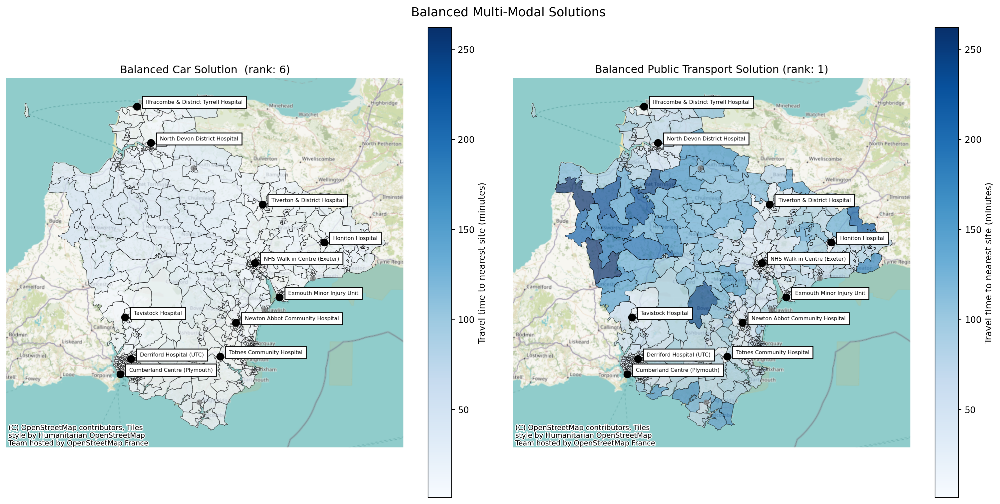
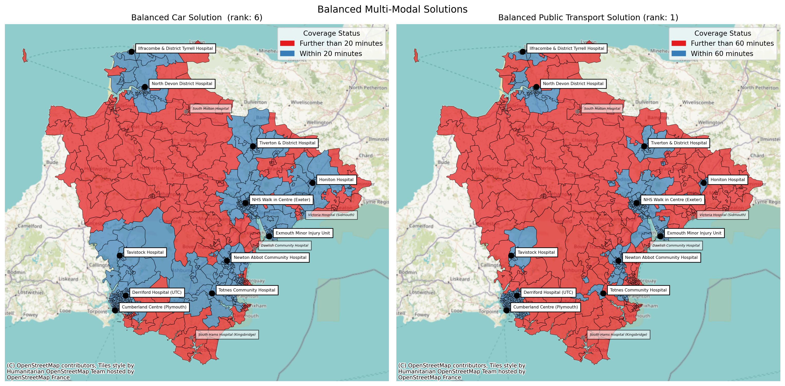
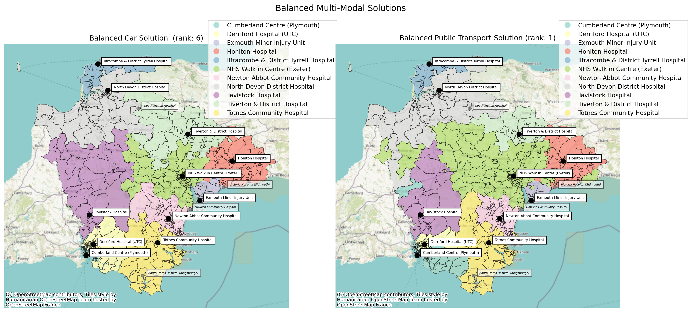
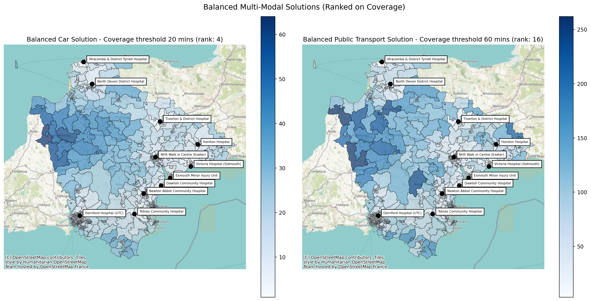

from lokigi.site import SiteProblemComparing Solutions
We may often find ourselves wanting to optimize for more than one objective.
For example, we may want a solution that strikes a good balance between car travel times and public transport times.
While full multi-objective optimization is some way down the lokigi roadmap, there are still ways to compare and contrast two solution sets in a way that can help aid decision making.
We start with our standard import.
This approach solves the problem twice (once per mode) and reconciles the two independently-ranked solution sets afterwards. If you want to explore trade-offs between modes directly on a single ranked list of solutions – for example with a Pareto front – see the multiple travel matrices example instead, which registers the second mode as a secondary travel matrix on one problem rather than solving twice.
Let’s first load up a problem.
We’ll just load in the information that needs to be shared across both problems - everything except our travel matrix.
problem = SiteProblem()
problem.add_sites(
"../../../sample_data/devon_mius.geojson",
candidate_id_col="Facility_Name"
)
problem.add_region_geometry_layer(
"https://github.com/hsma-programme/h6_3c_interactive_plots_travel/raw/main/h6_3c_interactive_plots_travel/example_code/LSOA_2011_Boundaries_Super_Generalised_Clipped_BSC_EW_V4.geojson",
common_col="LSOA11NM"
)We’ll then take a copy of our problem and add our car travel matrix.
problem_car = problem.copy()
problem_car.add_travel_matrix(
travel_matrix_df="../../../sample_data/devon_miu_travel_matrix.csv",
source_col="from_id",
unit="minutes",
)Then we can repeat, adding our public transport matrix.
problem_public_transport = problem.copy()
problem_public_transport.add_travel_matrix(
travel_matrix_df="../../../sample_data/devon_miu_travel_matrix_public_transport_extended.csv",
source_col="from_id",
unit="minutes",
)We’ll solve each.
In this instance we are looking to reduce from the 15 current minor injury units down 11.
Note that we’ve passed in different coverage thresholds (i.e. the target time for an LSOA to be from its nearest centre) across the two different options. However, depending on what you are looking to compare, you may have the same threshold, or no threshold at all.
solution_car = problem_car.solve(p=11, threshold_for_coverage=20)
solution_public_transport = problem_public_transport.solve(p=11, threshold_for_coverage=60)/__w/lokigi/lokigi/lokigi/site.py:1177: UserWarning:
No demand data was provided. Demand from all regions has been assumed to be equal.If you wish to override this, run .add_demand() to add your site dataframe before running .solve() again.You can use the .show_demand_format() to see the expected format beforehand.
/__w/lokigi/lokigi/lokigi/site.py:1177: UserWarning:
No demand data was provided. Demand from all regions has been assumed to be equal.If you wish to override this, run .add_demand() to add your site dataframe before running .solve() again.You can use the .show_demand_format() to see the expected format beforehand.
Let’s take a look at the best 2 solutions for our car problem.
solution_car.show_solutions().head(2)| solution_rank | site_names | site_indices | unselected_site_names | coverage_threshold | weighted_average | unweighted_average | 90th_percentile | max | weighted_average_for_ranking | ... | gap_absolute_weighted | gap_relative_weighted | avg_lower_third_bins | avg_middle_third_bins | avg_upper_third_bins | inter_tertile_ratio | gap_absolute_description | gap_relative_description | inter_tertile_description | problem_df | |
|---|---|---|---|---|---|---|---|---|---|---|---|---|---|---|---|---|---|---|---|---|---|
| 0 | 1 | [North Devon District Hospital, Honiton Hospit... | [0, 1, 2, 3, 5, 6, 7, 8, 11, 12, 14] | [Victoria Hospital (Sidmouth), South Hams Hosp... | 20 | 15.38 | 15.38 | 26.0 | 54.0 | 15.38 | ... | None | None | None | None | None | None | N/A (No equity data) | N/A (No equity data) | N/A (No equity data) | from_id North Devon District Hos... |
| 1 | 2 | [North Devon District Hospital, Honiton Hospit... | [0, 1, 2, 3, 5, 6, 7, 8, 9, 11, 12] | [Victoria Hospital (Sidmouth), Cumberland Cent... | 20 | 15.45 | 15.45 | 26.0 | 54.0 | 15.45 | ... | None | None | None | None | None | None | N/A (No equity data) | N/A (No equity data) | N/A (No equity data) | from_id North Devon District Hos... |
2 rows × 37 columns
And the best 2 for our public transport problem.
solution_public_transport.show_solutions().head(2)| solution_rank | site_names | site_indices | unselected_site_names | coverage_threshold | weighted_average | unweighted_average | 90th_percentile | max | weighted_average_for_ranking | ... | gap_absolute_weighted | gap_relative_weighted | avg_lower_third_bins | avg_middle_third_bins | avg_upper_third_bins | inter_tertile_ratio | gap_absolute_description | gap_relative_description | inter_tertile_description | problem_df | |
|---|---|---|---|---|---|---|---|---|---|---|---|---|---|---|---|---|---|---|---|---|---|
| 0 | 1 | [North Devon District Hospital, Honiton Hospit... | [0, 1, 2, 3, 5, 6, 7, 8, 10, 11, 12] | [Victoria Hospital (Sidmouth), South Hams Hosp... | 60 | 59.64 | 59.64 | 99.4 | 262.0 | 59.64 | ... | None | None | None | None | None | None | N/A (No equity data) | N/A (No equity data) | N/A (No equity data) | from_id North Devon District Hos... |
| 1 | 2 | [North Devon District Hospital, Honiton Hospit... | [0, 1, 2, 3, 5, 6, 7, 8, 10, 11, 14] | [Victoria Hospital (Sidmouth), South Hams Hosp... | 60 | 59.69 | 59.69 | 100.4 | 262.0 | 59.69 | ... | None | None | None | None | None | None | N/A (No equity data) | N/A (No equity data) | N/A (No equity data) | from_id North Devon District Hos... |
2 rows × 37 columns
We can quickly see that they are not the same sets of site indices!
We could pull out the best solution for car from our public transport example.
We first grab the car indices, then grab our solution dataframe from our public transport output.
We can then filter our public transport dataframe to find the row with the same site indices as our best car solution.
best_indices_car = solution_car.return_best_combination_site_indices()
public_transport_solution_df = solution_public_transport.show_solutions()
public_transport_solution_df[
public_transport_solution_df["site_indices"].apply(set) == set(best_indices_car)
]| solution_rank | site_names | site_indices | unselected_site_names | coverage_threshold | weighted_average | unweighted_average | 90th_percentile | max | weighted_average_for_ranking | ... | gap_absolute_weighted | gap_relative_weighted | avg_lower_third_bins | avg_middle_third_bins | avg_upper_third_bins | inter_tertile_ratio | gap_absolute_description | gap_relative_description | inter_tertile_description | problem_df | |
|---|---|---|---|---|---|---|---|---|---|---|---|---|---|---|---|---|---|---|---|---|---|
| 46 | 43 | [North Devon District Hospital, Honiton Hospit... | [0, 1, 2, 3, 5, 6, 7, 8, 11, 12, 14] | [Victoria Hospital (Sidmouth), South Hams Hosp... | 60 | 60.57 | 60.57 | 102.0 | 262.0 | 60.57 | ... | None | None | None | None | None | None | N/A (No equity data) | N/A (No equity data) | N/A (No equity data) | from_id North Devon District Hos... |
1 rows × 37 columns
So our best solution for car is our 43rd best solution for public transport!
Let’s repeat this, but the other way around - filtering our car solution to find the solution with the same indices as our best public transport solution.
best_indices_public_transport = solution_public_transport.return_best_combination_site_indices()
car_solution_df = solution_car.show_solutions()
car_solution_df[
car_solution_df["site_indices"].apply(set) == set(best_indices_public_transport)
]| solution_rank | site_names | site_indices | unselected_site_names | coverage_threshold | weighted_average | unweighted_average | 90th_percentile | max | weighted_average_for_ranking | ... | gap_absolute_weighted | gap_relative_weighted | avg_lower_third_bins | avg_middle_third_bins | avg_upper_third_bins | inter_tertile_ratio | gap_absolute_description | gap_relative_description | inter_tertile_description | problem_df | |
|---|---|---|---|---|---|---|---|---|---|---|---|---|---|---|---|---|---|---|---|---|---|
| 5 | 6 | [North Devon District Hospital, Honiton Hospit... | [0, 1, 2, 3, 5, 6, 7, 8, 10, 11, 12] | [Victoria Hospital (Sidmouth), South Hams Hosp... | 20 | 15.47 | 15.47 | 26.0 | 54.0 | 15.47 | ... | None | None | None | None | None | None | N/A (No equity data) | N/A (No equity data) | N/A (No equity data) | from_id North Devon District Hos... |
1 rows × 37 columns
It looks like our best public transport solution is our 6th best car travel solution - that could be a much more reasonable balance!
The SolutionComparator
Lokigi does provide a helper class for these sorts of comparisons. We’ll import it from the site_solutions module.
from lokigi.site_solutions import SolutionComparatorNow we initialise it, passing in our two SolutionSet objects (the output of the .solve() call), and passing in appropriate labels for telling them apart.
comparison = SolutionComparator(
solution_car,
solution_public_transport,
labels=("Car", "Public Transport")
)Let’s explore the various methods this class has.
We can return the top result from each.
comparison.compare_top_results()| solution_rank | site_names | site_indices | unselected_site_names | coverage_threshold | weighted_average | unweighted_average | 90th_percentile | max | weighted_average_for_ranking | ... | gap_relative_weighted | avg_lower_third_bins | avg_middle_third_bins | avg_upper_third_bins | inter_tertile_ratio | gap_absolute_description | gap_relative_description | inter_tertile_description | problem_df | origin | |
|---|---|---|---|---|---|---|---|---|---|---|---|---|---|---|---|---|---|---|---|---|---|
| 0 | 1 | [North Devon District Hospital, Honiton Hospit... | [0, 1, 2, 3, 5, 6, 7, 8, 11, 12, 14] | [Victoria Hospital (Sidmouth), South Hams Hosp... | 20 | 15.380481 | 15.380481 | 26.0 | 54.0 | 15.380481 | ... | None | None | None | None | None | N/A (No equity data) | N/A (No equity data) | N/A (No equity data) | from_id North Devon District Hos... | Car |
| 1 | 1 | [North Devon District Hospital, Honiton Hospit... | [0, 1, 2, 3, 5, 6, 7, 8, 10, 11, 12] | [Victoria Hospital (Sidmouth), South Hams Hosp... | 60 | 59.643564 | 59.643564 | 99.4 | 262.0 | 59.643564 | ... | None | None | None | None | None | N/A (No equity data) | N/A (No equity data) | N/A (No equity data) | from_id North Devon District Hos... | Public Transport |
2 rows × 38 columns
We can also get a quick summary of any given metric for each. This may be more useful if you are comparing, for example, a solution for 12 sites vs 11 sites (though you might find the plots in the ‘comparing n sites’ example more useful!)
comparison.get_metric_summary()| Car | Public Transport | difference | |
|---|---|---|---|
| count | 1365.000000 | 1365.000000 | 0.000000 |
| mean | 17.047162 | 66.675987 | -49.628825 |
| std | 1.099810 | 5.186672 | -4.086862 |
| min | 15.380481 | 59.643564 | -44.263083 |
| 25% | 16.275813 | 62.396040 | -46.120226 |
| 50% | 16.743989 | 64.721358 | -47.977369 |
| 75% | 17.619519 | 71.371994 | -53.752475 |
| max | 23.374823 | 89.872702 | -66.497878 |
Finding a balanced solution
What we’ll probably find most useful is the ability to draw out a ‘balanced’ solution.
By default, it will return the solution from each set where this combination of solutions minimizes the combined rank of the solutions.
solution_car, solution_public_transport = comparison.find_balanced_solution()
solution_carsolution_rank 6
site_names [North Devon District Hospital, Honiton Hospit...
site_indices [0, 1, 2, 3, 5, 6, 7, 8, 10, 11, 12]
unselected_site_names [Victoria Hospital (Sidmouth), South Hams Hosp...
coverage_threshold 20
weighted_average 15.471004
unweighted_average 15.471004
90th_percentile 26.0
max 54.0
weighted_average_for_ranking 15.471004
unweighted_average_for_ranking 15.471004
max_for_ranking 54.0
total_cost NaN
proportion_within_coverage_threshold 0.718529
proportion_regions_within_coverage_threshold 0.718529
demand_within_coverage_threshold 508.0
regions_within_coverage_threshold 508
regions_unreachable 0
demand_unreachable 0.0
proportion_demand_unreachable 0.0
weighted_by_equity_group {}
unweighted_by_equity_group {}
coverage_by_equity_group {}
coverage_regions_by_equity_group {}
max_cost_by_equity_group {}
regions_unreachable_by_equity_group {}
demand_unreachable_by_equity_group {}
gap_absolute_weighted None
gap_relative_weighted None
avg_lower_third_bins None
avg_middle_third_bins None
avg_upper_third_bins None
inter_tertile_ratio None
gap_absolute_description N/A (No equity data)
gap_relative_description N/A (No equity data)
inter_tertile_description N/A (No equity data)
problem_df from_id North Devon District Hos...
Name: 5, dtype: objectsolution_public_transportsolution_rank 1
site_names [North Devon District Hospital, Honiton Hospit...
site_indices [0, 1, 2, 3, 5, 6, 7, 8, 10, 11, 12]
unselected_site_names [Victoria Hospital (Sidmouth), South Hams Hosp...
coverage_threshold 60
weighted_average 59.643564
unweighted_average 59.643564
90th_percentile 99.4
max 262.0
weighted_average_for_ranking 59.643564
unweighted_average_for_ranking 59.643564
max_for_ranking 262.0
total_cost NaN
proportion_within_coverage_threshold 0.575672
proportion_regions_within_coverage_threshold 0.575672
demand_within_coverage_threshold 407.0
regions_within_coverage_threshold 407
regions_unreachable 0
demand_unreachable 0.0
proportion_demand_unreachable 0.0
weighted_by_equity_group {}
unweighted_by_equity_group {}
coverage_by_equity_group {}
coverage_regions_by_equity_group {}
max_cost_by_equity_group {}
regions_unreachable_by_equity_group {}
demand_unreachable_by_equity_group {}
gap_absolute_weighted None
gap_relative_weighted None
avg_lower_third_bins None
avg_middle_third_bins None
avg_upper_third_bins None
inter_tertile_ratio None
gap_absolute_description N/A (No equity data)
gap_relative_description N/A (No equity data)
inter_tertile_description N/A (No equity data)
problem_df from_id North Devon District Hos...
Name: 0, dtype: objectWe can see these are, in this case, the solutions we found earlier when we looked at our best public transport solution and found the position of the same example in our car travel time.
We can then use the .plot_comparison() method to put these side by side.
comparison.plot_comparison(
config_1={'site_indices': solution_car.site_indices,
'title': f'Balanced Car Solution (rank: {solution_car.solution_rank})'},
config_2={'site_indices': solution_public_transport.site_indices,
'title': f'Balanced Public Transport Solution (rank: {solution_public_transport.solution_rank})'},
title='Balanced Multi-Modal Solutions'
);
We can pass in all of our normal options.
comparison.plot_comparison(
config_1={'site_indices': solution_car.site_indices,
'title': f'Balanced Car Solution (rank: {solution_car.solution_rank})',
'label_all_locations': True,
'plot_regions_not_meeting_threshold': True
},
config_2={'site_indices': solution_public_transport.site_indices,
'title': f'Balanced Public Transport Solution (rank: {solution_public_transport.solution_rank})',
'label_all_locations': True,
'plot_regions_not_meeting_threshold': True
},
title='Balanced Multi-Modal Solutions'
);
comparison.plot_comparison(
config_1={'site_indices': solution_car.site_indices,
'title': f'Balanced Car Solution (rank: {solution_car.solution_rank})',
'label_all_locations': True,
'plot_site_allocation': True,
'legend_bbox_to_anchor': (1.18, 1.1),
'cmap': 'Set3'
},
config_2={'site_indices': solution_public_transport.site_indices,
'title': f'Balanced Public Transport Solution (rank: {solution_public_transport.solution_rank})',
'label_all_locations': True,
'plot_site_allocation': True,
'legend_bbox_to_anchor': (1.25, 1.1),
'cmap': 'Set3'
},
title='Balanced Multi-Modal Solutions'
);
Repeating with a different set of objectives
We can also pass different objectives to this method to then find a solution that balances something else.
For example, we might want to also see what the best balanced solution is for sites based on the proportion of LSOAs falling within the maximum travel time to their nearest site that we defined.
We can use the ‘secondary_objective’ parameter to choose what breaks ties between
Note
Lokigi will automatically handle the fact that we want to maximise the coverage metric (i.e. higher=better) while minimizing the weighted average travel time (i.e. lower=better).
solution_car_cov, solution_public_transport_cov = comparison.find_balanced_solution(
objective="proportion_within_coverage_threshold", secondary_objective="weighted_average"
)
solution_car_covsolution_rank 4
site_names [North Devon District Hospital, Honiton Hospit...
site_indices [0, 1, 2, 3, 4, 5, 6, 7, 11, 12, 14]
unselected_site_names [Tavistock Hospital, South Hams Hospital (King...
coverage_threshold 20
weighted_average 15.663366
unweighted_average 15.663366
90th_percentile 26.0
max 64.0
weighted_average_for_ranking 15.663366
unweighted_average_for_ranking 15.663366
max_for_ranking 64.0
total_cost NaN
proportion_within_coverage_threshold 0.735502
proportion_regions_within_coverage_threshold 0.735502
demand_within_coverage_threshold 520.0
regions_within_coverage_threshold 520
regions_unreachable 0
demand_unreachable 0.0
proportion_demand_unreachable 0.0
weighted_by_equity_group {}
unweighted_by_equity_group {}
coverage_by_equity_group {}
coverage_regions_by_equity_group {}
max_cost_by_equity_group {}
regions_unreachable_by_equity_group {}
demand_unreachable_by_equity_group {}
gap_absolute_weighted None
gap_relative_weighted None
avg_lower_third_bins None
avg_middle_third_bins None
avg_upper_third_bins None
inter_tertile_ratio None
gap_absolute_description N/A (No equity data)
gap_relative_description N/A (No equity data)
inter_tertile_description N/A (No equity data)
problem_df from_id North Devon District Hos...
Name: 3, dtype: objectsolution_public_transport_covsolution_rank 16
site_names [North Devon District Hospital, Honiton Hospit...
site_indices [0, 1, 2, 3, 4, 5, 6, 7, 11, 12, 14]
unselected_site_names [Tavistock Hospital, South Hams Hospital (King...
coverage_threshold 60
weighted_average 60.800566
unweighted_average 60.800566
90th_percentile 104.8
max 262.0
weighted_average_for_ranking 60.800566
unweighted_average_for_ranking 60.800566
max_for_ranking 262.0
total_cost NaN
proportion_within_coverage_threshold 0.58133
proportion_regions_within_coverage_threshold 0.58133
demand_within_coverage_threshold 411.0
regions_within_coverage_threshold 411
regions_unreachable 0
demand_unreachable 0.0
proportion_demand_unreachable 0.0
weighted_by_equity_group {}
unweighted_by_equity_group {}
coverage_by_equity_group {}
coverage_regions_by_equity_group {}
max_cost_by_equity_group {}
regions_unreachable_by_equity_group {}
demand_unreachable_by_equity_group {}
gap_absolute_weighted None
gap_relative_weighted None
avg_lower_third_bins None
avg_middle_third_bins None
avg_upper_third_bins None
inter_tertile_ratio None
gap_absolute_description N/A (No equity data)
gap_relative_description N/A (No equity data)
inter_tertile_description N/A (No equity data)
problem_df from_id North Devon District Hos...
Name: 15, dtype: objectWe can see that this time that the best ranked solution (for this pair of objectives - as the method will re-rank the original solution set if you pass non-default objectives) with the same sites in for car and public transport is the 4th best for cars and the 16th best for public transport, having the lowest combined rank overall across the example.
Note
If we have optimized using a non-exhaustive search method like GRASP, note that we may not get particularly optimal solutions when trying to find a balanced solution on anything other than the objective we originally optimized on.
However, if you’ve brute forced, like in this example, you can confidently explore balanced solutions for any objective.
comparison.plot_comparison(
config_1={
'site_indices': solution_car_cov.site_indices,
'title': f'Balanced Car Solution - Coverage threshold 20 mins (rank: {solution_car_cov.solution_rank})'
},
config_2={
'site_indices': solution_public_transport_cov.site_indices,
'title': f'Balanced Public Transport Solution - Coverage threshold 60 mins (rank: {solution_public_transport_cov.solution_rank})'
},
title='Balanced Multi-Modal Solutions (Ranked on Coverage)'
);